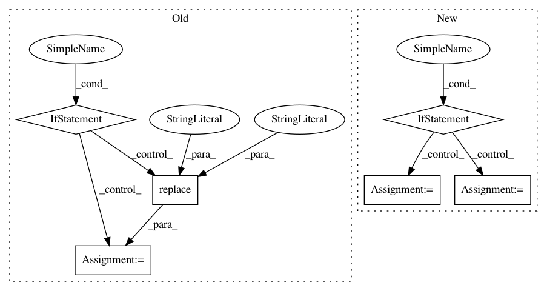

5496637ebbd60082df146d540e66ccb9751e177e,pmdarima/arima/tests/test_arima_diagnostics.py,,,#,14
Before Change
travis = os.environ.get("TESTING_ON_TRAVIS", "false").lower() == "true"
// Do not test on travis because they hate MPL
if not travis:
// Only do this setup if we are not running on Travis CI.
from matplotlib.pyplot import savefig
from matplotlib.testing.exceptions import ImageComparisonFailure
import matplotlib._png as _png
test_images_input_path = \
os.path.join("pmdarima", "arima", "tests", "input_images")
test_images_output_path = \
test_images_input_path.replace("input_images", "output_images")
def calculate_rms(expected_image, actual_image):
Compare two images
Calculate the per-pixel errors, then compute the RMSE.
Parameters
----------
expected_image : np.ndarray
Singed integer representation of expected image
actual_image : np.ndarray
Signed integer representation of actual/generated image.
Returns
-------
rms: float
RMSE of the the two images.
References
----------
.. [1] Matplotlib"s : matplotlib.testing.compare.calculate_rms
if expected_image.shape != actual_image.shape:
raise ImageComparisonFailure(
"Image sizes do not match expected size: {} "
"actual size {}".format(expected_image.shape,
actual_image.shape))
// Convert to float to avoid overflowing finite integer types.
return np.sqrt(((expected_image - actual_image).astype(float) ** 2)
.mean())
def format_error_message(rms, expected, actual, tol):
results = dict(rms=rms, expected=str(expected),
actual=str(actual), tol=tol)
// Then the results should be a string suitable for stdout.
template = ["Error: Image files did not match.",
"RMS Value: {rms}",
"Expected: \n {expected}",
"Actual: \n {actual}",
"Tolerance: \n {tol}", ]
str_res = "\n ".join([line.format(**results) for line in template])
return str_res
def compare_images(expected, actual, tol):
Compare two image files.
Compare two "image" files checking differences within a tolerance.
The two given filenames may point to files which are convertible to
PNG via the `.converter` dictionary. The underlying RMS is calculated
with the `.calculate_rms` function.
Parameters
----------
expected : str
The filename of the expected image.
actual : str
The filename of the actual image.
tol : float
The tolerance (a color value difference, where 255 is the
maximal difference). The test fails if the average pixel
difference is greater than this value.
Returns
-------
comparison_result : None or raises
Return ``None`` if the images are equal within the given tolerance.
Otherwise raises a dict with the following contents:
- ``rms``: The RMS of the image difference.
- ``expected``: The filename of the expected image.
- ``actual``: The filename of the actual image.
- ``diff_image``: The filename of the difference image.
- ``tol``: The comparison tolerance.
References
----------
.. [1] Matplotlib"s : matplotlib.testing.compare.compare_images
// These are coverage issues:
// if not os.path.exists(actual):
// raise Exception("Output image %s does not exist." % actual)
//
// if os.stat(actual).st_size == 0:
// raise Exception("Output image file %s is empty." % actual)
//
// if not os.path.exists(expected):
// raise IOError("Baseline image %r does not exist." % expected)
//
// assert os.path.exists(actual)
// assert os.stat(actual).st_size > 0
// assert os.path.exists(expected)
// open the image files and remove the alpha channel (if it exists)
expected_image = _png.read_png_int(expected)
actual_image = _png.read_png_int(actual)
expected_image = expected_image[:, :, :3]
actual_image = actual_image[:, :, :3]
if tol <= 0:
if np.array_equal(expected_image, actual_image):
return None
// convert to signed integers,
// so that the images can be subtracted without overflow
expected_image = expected_image.astype(np.int16)
actual_image = actual_image.astype(np.int16)
rms = calculate_rms(expected_image, actual_image)
if rms <= tol:
return None
// implicit "else"
raise AssertionError(format_error_message(rms, expected, actual, tol))
def test_calculate_rms():
// This is a meta test used to ensure we get the expected exception
// from our helper function
with pytest.raises(ImageComparisonFailure):
calculate_rms(np.random.rand(5, 4), np.random.rand(4, 5))
def test_format_error_message():
// Another meta test of our helper function. I don"t love that we"re
// even having to do this, but we should at least make sure our new
// functions introduce new breakage points
rms = 0.5
expected = "fake_file.png"
actual = "actual_file.png"
tol = 10
format_error_message(rms, expected, actual, tol)
// We"re not going to test for string equality, because that"s silly
// in this case. But at least we showed it didn"t break anything...
@pytest.mark.parametrize(
"model_type,model", [
pytest.param("arma", ARIMA(order=(1, 0, 0))),
pytest.param("arima", ARIMA(order=(1, 1, 0))),
pytest.param("sarimax", ARIMA(order=(1, 1, 0),
seasonal_order=(1, 0, 0, 12)))
])
def test_plot_diagnostics(model_type, model):
try:
safe_mkdirs(test_images_output_path) // Passes even if present
// TODO: @charlesdrotar, these will change if arima code changes
expected = \
os.path.join(test_images_input_path,
"plot_diagnostics_{}.png".format(model_type))
actual = \
os.path.join(test_images_output_path,
"plot_diagnostics_{}.png".format(model_type))
model.fit(lynx)
model.plot_diagnostics(figsize=(15, 12))
savefig(fname=actual)
compare_images(expected, actual, tol=10)
finally:
shutil.rmtree(test_images_output_path)
After Change
travis = os.environ.get("TESTING_ON_TRAVIS", "false").lower() == "true"
// Do not test on travis because they hate MPL
if not travis:
// base images are created on Mac/Darwin. Windows needs a higher tolerance
if platform.system() == "Windows":
tolerance = 10
else:
tolerance = 5
@pytest.mark.parametrize(
"model_type,model", [
pytest.param("arma", ARIMA(order=(1, 0, 0))),
pytest.param("arima", ARIMA(order=(1, 1, 0))),
pytest.param("sarimax", ARIMA(order=(1, 1, 0),
seasonal_order=(1, 0, 0, 12)))
])
@pytest.mark.mpl_image_compare(tolerance=10)
def test_plot_diagnostics(model_type, model):
model.fit(lynx)
return model.plot_diagnostics(figsize=(15, 12))
In pattern: SUPERPATTERN
Frequency: 5
Non-data size: 6
Instances
Project Name: tgsmith61591/pmdarima
Commit Name: 5496637ebbd60082df146d540e66ccb9751e177e
Time: 2018-12-24
Author: drotarcharles@yahoo.com
File Name: pmdarima/arima/tests/test_arima_diagnostics.py
Class Name:
Method Name:
Project Name: hellohaptik/chatbot_ner
Commit Name: e870ef14c590502fb0dc5ff3199e2602a87ec008
Time: 2019-03-18
Author: jain.chirag925@gmail.com
File Name: ner_v1/detectors/numeral/budget/budget_detection.py
Class Name: BudgetDetector
Method Name: _detect_max_budget
Project Name: Pinafore/qb
Commit Name: d48365776d72cfc7786e52210604698a7e6ceee8
Time: 2017-05-21
Author: ski.rodriguez@gmail.com
File Name: qanta/wikipedia/cached_wikipedia.py
Class Name: CachedWikipedia
Method Name: __getitem__
Project Name: konlpy/konlpy
Commit Name: cd28d70a9a960053d1d4f6d3e8fcf982ff12221b
Time: 2015-01-10
Author: me@lucypark.kr
File Name: setup.py
Class Name:
Method Name: requirements
Project Name: biotite-dev/biotite
Commit Name: f7e6a5c544859ce6b0d6626e2f815b2db0c7813a
Time: 2019-11-13
Author: patrick.kunzm@gmail.com
File Name: src/biotite/sequence/io/genbank/annotation.py
Class Name:
Method Name: get_annotation